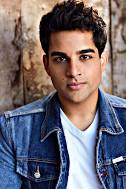

|
Jonathan Roumie Jesus |
Shahar Isaac Simon |
Elizabeth Tabish Mary Magdalene |

Paras Patel Matthew |
Lara Silva Eden |
Duração: 141 min
Nome Original: Godzilla X Kong: The New Empire
Distribuição: Paris Filmes
País de Origem